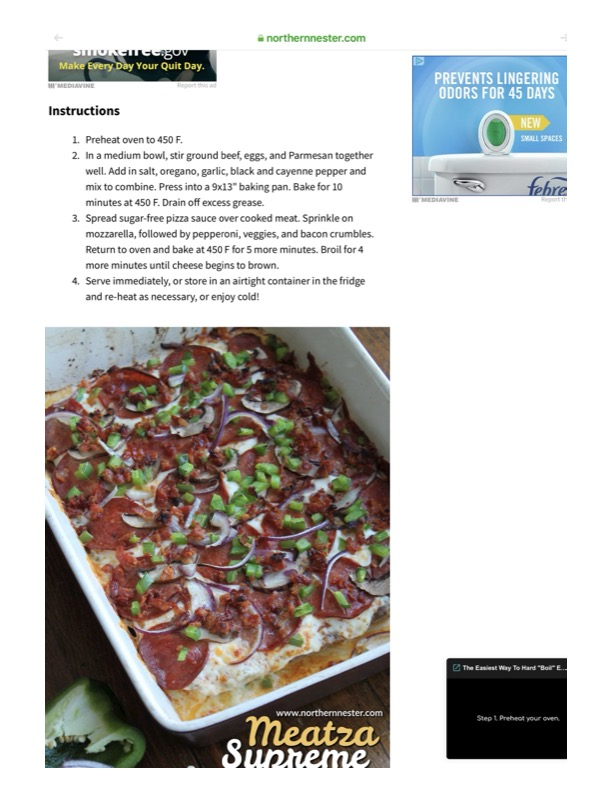

Meatza Supreme

Original cookbook page 10
A low-carb pizza made with a ground beef crust topped with cheese, pepperoni, vegetables, and bacon.
Prep: 15 minutes • Cook: 19 minutes • Total: 34 minutes
Ingredients
- Ground beef
- Eggs
- Parmesan cheese
- Salt
- Oregano
- Garlic
- Black pepper
- Cayenne pepper
- Sugar-free pizza sauce
- Mozzarella cheese
- Pepperoni
- Vegetables (as desired)
- Bacon crumbles
Instructions
- Preheat oven to 450°F.
- In a medium bowl, stir ground beef, eggs, and Parmesan together well. Add in salt, oregano, garlic, black and cayenne pepper and mix to combine. Press into a 9x13" baking pan. Bake for 10 minutes at 450°F. Drain off excess grease.
- Spread sugar-free pizza sauce over cooked meat. Sprinkle on mozzarella, followed by pepperoni, veggies, and bacon crumbles. Return to oven and bake at 450°F for 5 more minutes. Broil for 4 more minutes until cheese begins to brown.
- Serve immediately, or store in an airtight container in the fridge and re-heat as necessary, or enjoy cold!
Recipe #10 from collection